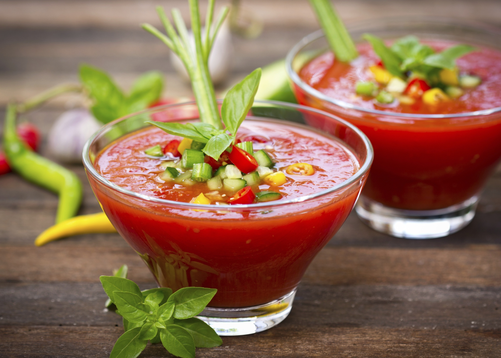

Matthew's Site
I'm Matthew! Thanks for checking out my site! I'm really into web development, audio engineering, biking, and cooking. When I make websites I like to host them on GitHub Pages because it's free! Of course you can buy your own domain address,
otherwise it's a github.io domain name.

My Famous Gazpacho Recipe
This is my world famous Gazpacho recipe. It's really easy, delicious, and healthy. Plus it's a great way to cool off in the summer. Put it in tiny glasses and serve them as appitizers at parties!
Preparation time: 20 minutes Let Sit: 6 hours Serves: 4-8
Ingredients:
- 6 plum tomatoes
- 2 cucumbers
- 2 cloves garlic
- 1 lime
- 1/2 white onion
- 1/3 cup virgin olive oil
- fresh basil
- sea salt
- freshly ground pepper
Directions:
- Roughly chop tomatoes, cucumbers, and onions. Dice garlic. Dump vegetables and olive oil into a blender.
- Cut lime in half and squeeze juice into the blender.
- Add a couple leaves of basil and some salt and pepper into the blender.
- Use the chop setting of your blender to blend the mixture into a chunky yet soupy consistency.
- Add more salt and pepper to taste.
- Refrigerate for at least 6 hours, though preferably overnight.
- Serve cold. It's great with a sprinkle of parmesian, a splash of hot sauce, or a side of crusty bread. Make sure it's hot outside first though!